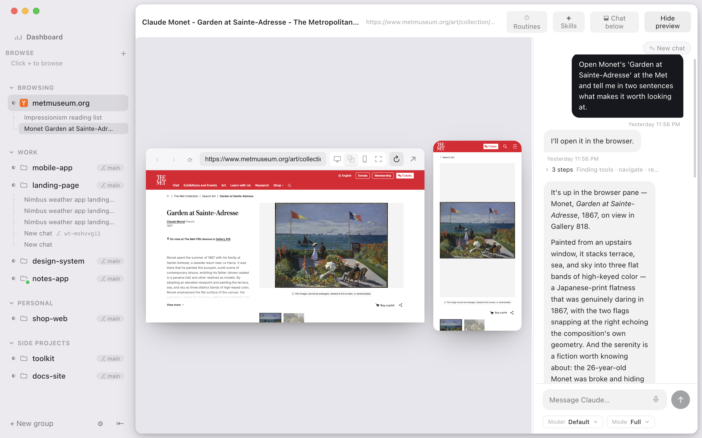
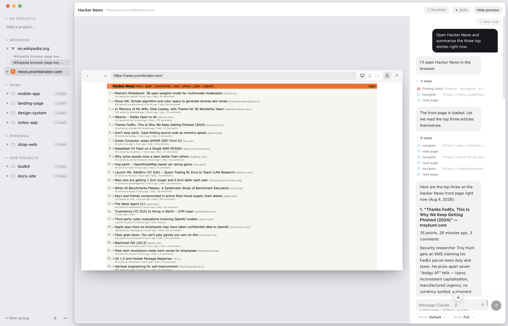
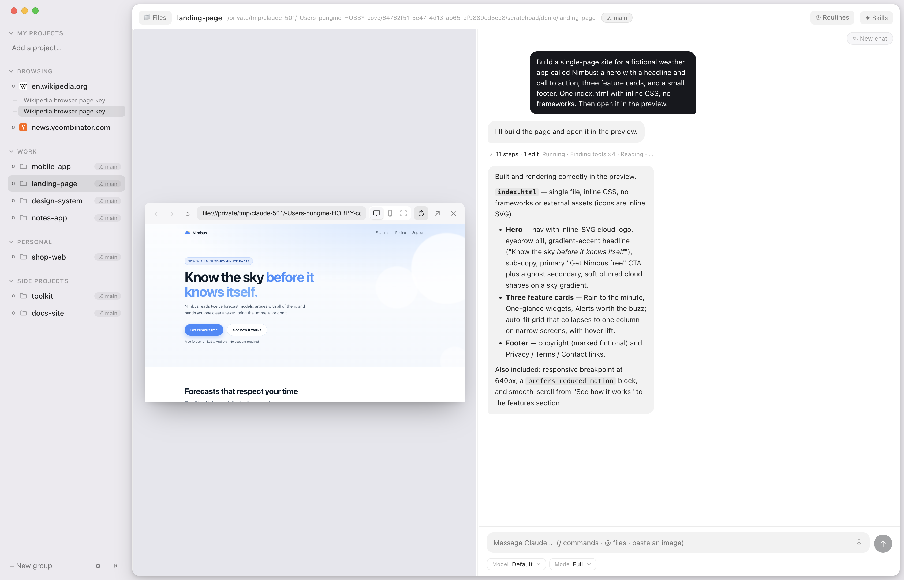

macOS · local · open source · your own Claude subscription
The home for Claude Code.
Your agent already writes the code. SuperAgent gives it a place to live: one persistent chat, a real browser it drives on the sites you're logged into, and routines that run themselves — all in a Mac app that runs on your own machine, so you can read exactly what it does.
Apple Silicon · .dmg · free & open source

A terminal forgets. This doesn't.
The command line is a great place to run an agent and a terrible place to live with one. Close it and the context is gone; it can't see a page, can't keep a schedule, can't sit beside your work. SuperAgent keeps the agent you already pay for — and gives it hands, memory, and a screen.
A browser your agent can drive.
Not a headless browser it describes to you second-hand — the real one on your screen, using your logins. Ask, and watch it navigate, click, type, and read the page back. Step in and take the wheel whenever you want.
- Your sessions — it works inside the sites you're already signed into.
- Desktop & mobile preview — see any site the way real users do.
- You're never locked out — click in and browse yourself any time.

Build a page and watch it render — in one window.
Ask for a webpage and it appears beside the chat as the agent writes it. No alt-tabbing between an editor, a terminal, and a browser to find out whether it worked — the code, the steps, and the live page share one screen.
- Live preview of your dev server or any local file, right in the pane.
- Steps and edits grouped so the conversation stays readable, with a live task list up top.
- Message it mid-task — it reads you and adjusts, like the terminal can't.

Turn any task into a routine.
"Every morning, check this and follow up." It re-runs against your browser and your logins, on a timer, while the app is open — so the repetitive things just happen.
One chat that stays
A persistent conversation per project. Quit, reopen, and the whole thread — context and all — is still there.
Real browser, real logins
The agent drives the same browser you use, with the sessions you set up by hand. You watch, and you can take over.
Routines on a timer
Schedule the repetitive work once and let it run itself, against your session, in the background.
Your machine, your keys
Everything runs locally on your Mac against your own Claude subscription. No middleman server, no second account, no per-seat SaaS.
Open source
The whole app is on GitHub. Read exactly how it drives your browser, build it yourself, or fork it. Nothing hidden.
You set the limits
Per chat: choose the model and how far the agent can reach — full access, edits only, or a read-only plan.
Give your agent somewhere to live.
Requires Claude Code & an active Claude subscription